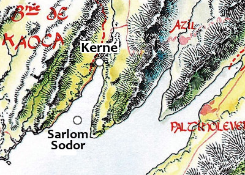

Le bagne de Sarlom Sodor
Sarlom Sodor est une petite île plate de 600 x 300 mètres située dans le golfe de la Première dent à la frontière entre Kaoca et Azilian, à un peu moins de dix kilomètres du village de Kerné, et à deux kilomètres de la côte la plus proche. Son sol regorge d'obsidienne noire, mais on n'y trouve aucune source d'eau douce et pratiquement aucune végétation.
Histoire
Il y a de cela très longtemps l'île était pourtant habitée par des prêtres, mais lors du Châtiment le séisme a libéré de son sol une énorme dose de gaz toxique qui a décimé tous ses habitants. La cause du décès de la petite population de l'île n'ayant pas été découverte à l'époque, l'île se vit affublée d'une réputation de lieu maudit durant des siècles et les quelques constructions de l'île finirent par tomber en ruines les unes après les autres. Puis un jour des marins d'Azilian furent contraints d'échouer sur l'île suite à une avarie de leur bateau. Ce dernier fut réparé et un marin emporta en souvenir une pierre noire qu'il avait récupéré au sol. De retour en ville, un marchand lui racheta la pierre et découvrit à celle-ci des facultés de coupe quasiment égale à celle d'un diamant. L'homme monta alors une expédition afin d'aller récupérer plus de pierres, mais au bout d'une semaine un homme mourut, suivit d'autres de plus en plus nombreux durant les jours qui suivirent. Les survivants regagnèrent alors en catastrophe Azilian, et la légende de l'île maudite refit rapidement surface. Pourtant les pierres attisaient toujours l'intérêt du marchand, frère d'un membre du Conseil des 7 Marchands d'Azilian, qu'il convainc du négoce qu'il y avait à faire avec ces pierres et le persuada d'envoyer des condamnés l'extraire, aucun homme libre n'acceptant plus d'aller y travailler comme mineur. On envoya donc des prisonniers sous bonne garde, mais bien que se tenant à l'écart des carrières, de nombreux soldats périrent, en plus des dizaines de prisonniers, et l'entreprise fut de nouveau arrêtée.
C'est un alchimiste qui le premier réussit à mettre en évidence la présence d'un gaz fortement toxique mais inodore sur Sarlom Sodor. La légende de la malédiction prenant fin avec cette explication rationnelle, restait le problème de l'extraction des pierres. La perte de condamnés n'était pas un souci pour la Marche d'Azilian, mais comment les faire garder ? La solution viendra finalement involontairement des arachniens lorsque l'un d'entre eux répliqua à un soldat sous forme de plaisanterie que ses araignées feraient de bien meilleurs gardiens que lui. L'idée germa, et bientôt Azilian déploya autour de l'île plusieurs araignées d'eau géantes, empêchant ainsi toute évasion à la nage, et permettant du même coup de laisser les prisonniers seuls sur l'île sans protections rapprochées. Sarlom Sodor se convertit alors définitivement en bagne.
La garnison de Kerné
Les araignées d'eau géantes sont supervisées par des arachniens depuis le village côtier de Kerné. Ce petit bourg, originalement de pécheurs, compte près de 300 âmes et est devenu le centre administratif du bagne. C'est là que s'est implantée la garnison en charge de la surveillance du bagne, c'est de là que les soldats embarquent sur les bateaux de patrouille, et de là encore que part chaque semaine un navire de ravitaillement à destination de l'île. C'est donc aujourd'hui la garnison qui fait principalement vivre Kerné, car la présence des araignées a considérablement réduit les bancs de poissons dans la petite baie de la Première dent.
Au niveau sécurité, la dizaine d'araignées géantes sont volontairement affamées afin d'être plus hargneuses, et pour plus de protections, deux bateaux contenant chacun une quinzaine de soldats patrouillent presque en permanence autour de l'île et dans la baie. Un contingent d'une trentaine d'autres soldats restent dans les baraquements à Kerné, qui fait également office de poste frontière avec Kaoca. Les soldats sont sous le commandement d'un vieux capitaine d'Azilian nommé Haradrim, mais c'est un magicien du nom de Thiese qui a la responsabilité administrative du bagne. Ce dernier, devin, n'hésite d'ailleurs pas à user de ses pouvoirs magiques pour surveiller le bagne à distance.
Avec le temps le bagne a acquis une excellente réputation en termes de sécurité, et toutes les provinces des Deux Lacs envoient de nos jours à Sarlom Sodor les prisonniers qu'elles souhaitent voir « disparaître » sans toutefois pouvoir les exécuter publiquement. Pour cela on trouve de nombreux prisonniers politiques sur l'île.
Le bagne
POUR LE MD
Un trafic a récemment était monté autour du bagne. Les responsables de la garnison touchant des primes suivant la quantité d'extraction de pierre, Haradrim a rapidement compris que plus il aurait de prisonniers, plus il toucherait en retour. Or la main d'oeuvre doit se renouveler rapidement au bagne. L'homme a donc contacté un juge corrompu de Laelith et lui verse une prime secrète pour chaque personne qu'il lui envoie au bagne. Le juge de la cité sainte n'hésite donc pas à alourdir les peines qu'il inflige pour que les prisonniers soient envoyés à Sarlom Sodor.
Thiese s'est aperçu du trafic, mais pour l'instant il ne dit rien car cela ne le gêne pas personnellement et il préfère ne pas avoir de problème avec son capitaine. Le Conseil des 7 Marchands d'Azilian n'est par contre pas du tout au fait de cette histoire.
L'espérance de vie sur l'île est de quelques semaines pour les plus faibles, pas plus. Le gaz hautement toxique qui se libère en même temps que les pierres dans les carrières est impitoyable. Incolore, inodore, il n'est par chance pas actif plus de quelques minutes au contact de l'air, et c'est pour cela qu'il n'est pas employé comme poison par les assassins. Mais sa diffusion continue dans les carrières de Sarlom Sodor ronge inlassablement les organismes respiratoires des hommes, jusqu'à provoquer leur mort par étouffement. Alors afin de « motiver » les bagnards au travail malgré le danger, Azilian leur promet des remises de peine importantes, voir des grâces, s'ils parviennent à extraire un quota fixé à l'avance par décret.
Les bagnards
La cinquantaine de prisonniers sur l'île vit en communautés : les hérétiques, les hommes politiques « inciviques », les marchands spoliés par le Conseil, les prisonniers de droit commun et la bande de Grimsh.
Le nain Grimsh, une force de la nature, est le plus vieux pensionnaire du bagne. Cela fait en effet plus de cinq ans qu'il est là, et bien que tout de même affaibli par le gaz, il n'en est pas encore à rendre son dernier souffle prochainement. Il a monté une sorte de mafia sur l'île avec d'autres gredins et asservissent les autres bagnards en ponctionnant ce qu'ils extraient, sans travailler. Deuxième énorme avantage, ils se tiennent ainsi un peu en retrait des émanations les plus fortes. Les autres ne peuvent qu'accepter ou se faire battre, car il n'y a personne à qui se plaindre sur l'île.
Écrit par sethie Ier